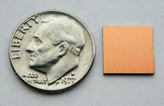
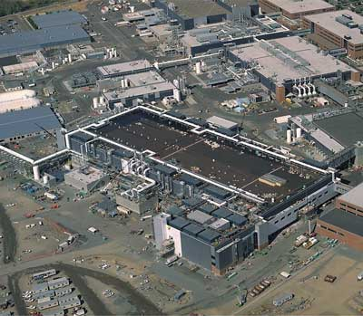
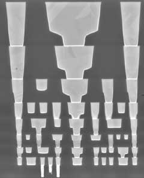
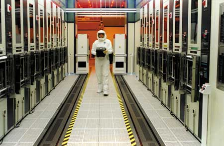

Олег Спиряев
Исследователи и аналитики уже не раз предсказывали, что в ближайшие годы процесс миниатюризации микросхем достигнет физических пределов, которые уже нельзя преодолеть. Однако до сего дня ни одно из подобных предсказаний не сбылось. Высокая степень интеграции позволяет год от года наращивать мощность микропроцессоров и выпускать кристаллы памяти, способные хранить миллионы бит данных. Так, в августе прошлого года корпорация Intel (http://www.intel.com) сделала значительный шаг в развитии технологии производства микросхем нового поколения, выпустив на базе производственной технологии 65 нм первые полнофункциональные микросхемы памяти стандарта SRAM (Static Random Access Memory) емкостью 70 Мбит, содержащие более 0,5 млрд транзисторов. Таким образом, Intel продолжает выполнять свой план перехода на новые производственные технологии - каждые два года, в соответствии с законом Мура.
Транзисторы в полупроводниковых микросхемах, изготавливаемых по новой 65-нм технологии, имеют затворы (переключатели, включающие и выключающие транзисторы) размером 35 нм, что приблизительно на 30% меньше, чем в случае 90-нм технологии. Для сравнения: диаметр красного кровяного тельца человека позволяет разместить около 100 таких затворов.
Ячейка памяти (рис. 1), получаемая по новому технологическому процессу, состоит из шести транзисторов и занимает площадь в 0,57 мкм2 (0,46х1,24 мкм). Такие крошечные ячейки памяти позволяют значительно увеличить кэш-память процессоров при сохранении размеров кристалла, что, в свою очередь, приводит к росту быстродействия. Испытания показали, что новые ячейки памяти работают очень стабильно, с невысоким уровнем шума и практически безошибочным переключением из одного состояния в другое.
|  | Рис. 1. Кристалл SRAM, созданный по технологии 65 нм.
|
Новая производственная технология, увеличивая число крошечных транзисторов, помещающихся на одной микросхеме, дает Intel основу для создания процессоров будущего, содержащих несколько ядер, а также возможность разрабатывать инновационные функции для новых моделей продукции, в том числе функций виртуализации и безопасности. Эта технология также обеспечивает энергосбережение и повышение производительности.
Техпроцесс 65 нм объединяет несколько последних достижений Intel. Среди них стоит отметить следующие:
- высокопроизводительные транзисторы с невысоким потреблением энергии;
- второе поколение технологии "растянутого кремния" (strained silicon), которая позволяет повысить рабочие токи транзисторов и их быстродействие при увеличении себестоимости всего на 2%;
- восемь слоев высокоскоростных медных соединений и диэлектрического материала с низкой диэлектрической проницаемостью, позволяющего повысить скорость распространения сигналов в кристалле и снизить энергопотребление процессора.
Технология, использующая проектные нормы 65 нм, была разработана и протестирована на фабрике D1D (рис. 2) в Хиллсборо (шт. Орегон, США) - новейшей и самой большой фабрике Intel, четвертой по счету, использующей 300-мм пластины. Надо отметить, что фабрика D1D обладает крупнейшим среди подобных фабрик особо чистым помещением, занимающим площадь 176 000 кв. футов (примерно 3 с половиной футбольных поля). По имеющейся информации, на D1D будут также вестись разработка и производство микропроцессоров по следующей, 45-нм технологии Intel.
|  |
| Рис. 2. Фабрика Intel D1D.
|
Вот уже много лет Intel подтверждает справедливость закона Мура, вводя в действие новый технологический процесс каждые два года. Нынешний технологический прорыв состоялся даже с опережением графика - в ноябре 2003 г., всего через 20 месяцев после объявления в марте 2002 г. о выходе ячейки SRAM, изготовленной по техпроцессу 90 нм (который корпорация сейчас начинает использовать для массового производства микропроцессоров), Intel объявила о создании первых микросхем SRAM емкостью 4 Мбит на базе 65-нм производственной технологии.
О законе МураЗакон Мура - который, как принято считать, гласит, что число транзисторов в микросхеме данного типа удваивается каждые два года, - остается руководящим принципом прогресса электроники и вычислительной техники с тех пор, как ученый сформулировал свою знаменитую максиму в 1965 г. И столько же времени этому закону предсказывают близкий конец. Но пока предел не достигнут, так что кристаллы и компьютеры одновременно становятся все мощнее и дешевле. Говорят, что количество производимых ежегодно транзисторов примерно равно количеству отпечатываемых за год букв, - да и стоят они примерно столько же (за доллар сегодня можно купить 50 млн транзисторов). Количество производимых транзисторов в десятки раз превосходит популяцию муравьев на планете. Если в конце 50-х были микросхемы всего с 200 транзисторами, то сейчас речь идет о производстве кристаллов, содержащих миллиард транзисторов. Считается, что спор между оптимистами и пессимистами в отношении закона Мура все больше сводится к полемике инженеров и ученых-физиков. Физики утверждают, что сжимать транзистор можно лишь до определенного предела. Инженеры же говорят, что всегда можно найти обходной путь. Напомним, что было время, когда пределом считался 1 мкм - длина волны видимого света, используемого в середине 80-х для литографии. Чтобы решить эту проблему, инженеры перешли на ультрафиолетовое излучение. Потом считалось, что прогресс остановится на проектных нормах 0,25 мкм, но и этого не произошло. Теперь дорожки на микросхемах тоньше длины волны света, которыми они проектируются. Стоит развеять некоторые заблуждения по поводу закона Мура. Во-первых, не сам Гордон Мур (Gordon E. Moore) дал закону такое имя - это сделал Карвер Мид, профессор Калифорнийского технологического института, прочитав статью Мура о потенциале роста числа транзисторов. Сам Мур утверждает также, что никогда не говорил, будто число транзисторов будет удваиваться каждые 18 месяцев. Сначала он писал о ежегодном удвоении, но в 1975 г. заменил формулировку на удвоение за каждые два года. Дэвид Хаус (David House), бывший в то время генеральным директором Intel, добавил, что это приведет к двукратному повышению производительности компьютеров каждые 18 месяцев. Хаус действительно оказался близок к истине: вычислительная мощность удваивается примерно каждые 20 месяцев.
|
Что нового
Каждый новый технологический процесс - это микрореволюция, предполагающая существенную перестройку технологических линий для массового производства процессоров. Действительно, чтобы стабильно, каждые два года, обеспечивать почти полуторакратное уменьшение размеров всех схем микропроцессора, приходится каждый раз создавать что-то поистине революционное. В 2001 г. от алюминиевых соединений перешли к медным, в 2003 г. вместо обычного кремния в транзисторе стали использовать "растянутый кремний" (strained silicon). По прогнозам, в 2007 г. в рамках 45-нм технологического процесса вместо диоксида кремния в затворе транзистора будет использоваться специально созданный в лабораториях корпорации Intel диэлектрик с высокой диэлектрической проницаемостью, а электрод затвора будут делать из специального сплава металлов. Все эти "небольшие технологические революции" исследователи Intel совершают с одной целью - сделать процессоры более мощными и менее дорогими.
Одна из наиболее интересных разработок, используемая в изделиях Intel последнего времени, - технология "растянутого кремния". Идея ее предельно проста. Напомним, что на срезе человеческого волоса, который традиционно служит неким эталоном миниатюризации, могут поместиться тысячи транзисторов; размер такого транзистора - главного элемента микросхемы - уместно сравнивать с размером вируса гриппа. В процессе миниатюризации транзисторов и уменьшения площади их сечения возрастает сопротивление электрическому току, проходящему через транзистор. В результате транзистор "срабатывает" гораздо медленнее, чем хотелось бы, а тепловыделение, наоборот, увеличивается. Специалисты корпорации решили "растянуть" кристаллическую решетку в транзисторе, чтобы увеличить расстояние между атомами и облегчить протекание тока.
Инженеры подразделения Intel Logic Technology Development Division разработали два независимых способа "растяжения" кремния для разных типов транзисторов. Напомним, что существует два типа CMOS-транзисторов (CMOS, complimentary metal oxide semiconductor): n-типа, обладающие электронной проводимостью, и p-типа, характеризующиеся проводимостью дырочной. Так вот, в nMOS-устройствах поверх транзистора в направлении движения электрического тока наносится слой нитрида кремния (Si3N4), в результате чего кремниевая кристаллическая решетка и "растягивается". В pMOS-устройствах "растяжение" достигается за счет нанесения слоя SiGe в зоне образования переносчиков тока - здесь решетка "сжимается" в направлении движения электрического тока, и потому "дырочный" ток течет свободнее. В обоих случаях прохождение тока значительно облегчается. Сочетание же обеих технологий дает существенное улучшение.
Технология "напряженного кремния", впервые реализованная Intel в 90-нм производственном процессе, для проектных норм 65 нм значительно улучшена. Во втором поколении этой технологии производительность транзисторов увеличилась на 10-15% без роста утечки электрического тока (большая утечка тока приводит к выделению излишнего количества тепла). В транзисторах, созданных по 65-нм технологии, объем утечки уменьшен в четыре раза по сравнению с транзисторами на базе технологии 90 нм.
В транзисторах на базе 65-нм производственной технологии размер затвора уменьшен до 35 нм, а толщина оксидного слоя затвора - до 1,2 нм. Сочетание этих факторов также обеспечивает высокую производительность и уменьшенную электроемкость затвора (последнее понижает общее энергопотребление микросхемы). Кроме того, в новом производственном процессе используются восемь промежуточных слоев из меди (рис. 3) и диэлектрический материал с низким коэффициентом проводимости (так называемый диэлектрик low-k), увеличивающий скорость передачи сигнала в микросхеме и сокращающий энергопотребление.
|  | Рис. 3. Восемь слоев межсоединений.
|
По заявлению одного из руководителей корпорации, Intel активно работает над решением стоящих перед отраслью производства полупроводников проблем, связанных с энергопотреблением и рассеиванием тепла. В частности, разработчики Intel включили в микросхемы SRAM на базе 65-нм производственной технологии так называемые транзисторы сна (sleep transistors). Подобные транзисторы отключают подачу тока на большие блоки памяти SRAM, когда те не используются, что значительно снижает энергопотребление микросхемы. Эта функция особенно полезна для устройств с питанием от батареи, например, для мобильных ПК.
Интересно, что в 65-нм процессорах Intel не будет использоваться технология "кремний на изоляторе" (SOI, дополнительный слой, предназначенный для уменьшения тока утечки). Пару лет назад Intel экспериментировала с так называемым сверхтонким SOI. Теперь компания считает, что экономия энергии, которую может обеспечить эта технология, будет достигнута за счет применения трехзатворных транзисторов - это способ втрое увеличить площадь той области транзистора, сквозь которую пропускаются электроны.
В целом в корпорации Intel уверены, что переход к технологическим нормам 65 нм существенно облегчит решение задач, связанных с созданием перспективных многоядерных процессоров.
Куда исчез "плюмбум"Свинец применяется в электронике уже более ста лет благодаря уникальному сочетанию электрических и механических свойств. Разработка новых материалов, способных заменить свинец в компонентах, продукции и процессах сборки и обладающих необходимыми рабочими характеристиками и надежностью, оказалась весьма непростой научной и технической задачей для исследователей отрасли. В то же время многие структуры в разных странах мира вели работу по сокращению или исключению применения свинца и соответственно ликвидации опасности, которую он представляет для окружающей среды и здоровья населения. Intel еще в 2001 г. аттестовала первый не содержащий свинца корпус типа Plastic Ball Grid Array для компонентов флэш-памяти, а уже в 2002 г. выпустила первые не содержащие свинца компоненты. Оловянно-свинцовый припой, применявшийся ранее для соединения корпуса с системной платой, был заменен сплавом олова, серебра и меди. Эта работа дала Intel ценный опыт в технологических и организационных аспектах перехода на "бессвинцовые" технологии. В разработанном корпорацией новом корпусе Flip Chip Ball Grid Array для соединения корпуса с системной платой применяются выводы из такого же сплава. Но пока ни Intel, ни другие компании отрасли не нашли замены, отвечающей всем требованиям к рабочим характеристикам и надежности, в связи с чем небольшое количество оловянно-свинцового припоя (около 0,02 г) по-прежнему используется внутри герметичного корпуса для соединения полупроводникового кристалла с корпусом. Еще в прошлом году Intel приступила к реализации мер по снижению примерно на 95% общего количества свинца, применяемого в выпускаемых компанией процессорах и наборах микросхем. Эти меры предусматривали исключение свинца из материалов корпусов процессоров для повышения их экологической безопасности. |
На пути к жесткому ультрафиолету
Кристаллы, изготавливаемые по 65-нм процессу, будут производиться не только на фабрике D1D в Орегоне, но и на фабриках Intel в штате Аризона и в Ирландии. Специалисты полагают, что переход с проектных норм 90 нм на 65 нм не станет столь болезненным, как переход со 130-нм процесса на 90-нм, при котором технологических изменений было больше. Тем не менее история показывает, что такие переходы занимают больше времени, чем планировалось. В частности, некоторые эксперты полагают, что со временем цикл перехода на новый производственный процесс удлинится с двух лет до трех. Многие также считают, что переход на 45-нм технологию, намеченный на 2007 г., будет особенно трудным, так как производителям придется заменять материалы затвора транзисторов и изолирующего оксидного слоя.
Помимо чисто физических проблем, процесс уменьшения размеров транзисторов и увеличения степени их интеграции уже наталкивается на ограничения, связанные с особенностями производства микросхем. Вообще говоря, устройства, которые создаются на одной кремниевой пластине, равно как и на разных пластинах, не идентичны по свойствам. Отклонения могут возникать на любом этапе производства. Характер вероятных различий между производимыми кристаллами и частота появления просто бракованных устройств могут стать реальной преградой на пути дальнейшей миниатюризации элементов интегральной схемы. Отметим, что миниатюризация касается не только длины и ширины элемента схемы, но и толщины самого кристалла. Транзисторы и соединения на нем реализуются с помощью серии уровней, в современных микросхемах их может быть семь или восемь. Уменьшение размеров транзисторов и увеличение плотности их размещения на кристалле влечет за собой и увеличение числа уровней. Однако чем больше слоев в схеме, тем тщательнее должен быть контроль за ними в процессе производства, поскольку на каждый из уровней будут влиять нижележащие. Стоимость усовершенствования средств контроля и стоимость создания соединений между множеством уровней могут оказаться фактором, сдерживающим увеличение числа слоев.
Кроме всего прочего, усложнение интегральных схем требует совершенствования условий производства, к которым и так предъявляются беспрецедентно высокие требования. Необходим более точный механический контроль за позиционированием исходной кремниевой пластины. Стерильное помещение (чистая комната), где создаются микросхемы, должно стать еще чище, дабы исключить попадание мельчайших частичек пыли, способных разрушить сложнейшую схему.
|  |
| Рис. 4. "Бригадир" полупроводникового цеха.
|
При изготовлении 65-нм микросхем Intel сохранит верность технологии "сухой" литографии. Сейчас некоторые производители исследуют также возможности иммерсионной литографии, при которой пластины погружаются в воду. Вода помогает сфокусировать лазерный луч, что позволяет вырисовывать более мелкие линии.
Для массового производства 65-нм микросхем Intel планирует применять литографическое оборудование с рабочей длиной волны 248 и 193 нм. Стоит отметить, что новые поколения литографического оборудования выходят на рынок годами, а стоимость его может достигать десятков миллионов долларов, так что частичное использование старого оборудования при производстве новых микросхем уменьшает степень риска. Вообще говоря, стоимостные и технологические вопросы в полупроводниковой промышленности тесно взаимосвязаны. Для развития современных технологий микроэлектроники и создания новых производств нужны огромные инвестиции - они идут на приобретение специального технологического оборудования и строительство чистых помещений. Сложность и стоимость полупроводникового производства постоянно растут. Основную часть стоимости полупроводниковой фабрики составляет технологическое и контрольно-измерительное оборудование: по некоторым оценкам, доля этого оборудования в общей стоимости предприятия может достигать 50-70%. Считается, что для наращивания производства полупроводников фирмам необходимо выделять на капитальные нужды более 20% своего годового дохода, а меньших средств достаточно лишь для его поддержания.
Производство средств производстваЗа последние три года корпорация Intel проявила себя еще и в качестве одного из влиятельнейших игроков на рынке производства оборудования для полупроводниковой промышленности. В значительной мере это результат деятельности ее подразделения Technology Manufacturing Engineering (TME). Канули в прошлое те времена, когда Intel выступала лишь в роли заказчика, закупавшего оборудование для своего производства. По мере усложнения продукции корпорации производителям технологического оборудования приходится напрягать все силы, чтобы не отстать от требований времени. Понятно, что идти впереди рынка, когда инструментария для производства продукции следующего поколения просто не существует в природе, дело непростое. Именно это побудило Intel установить через TME тесные партнерские отношения с поставщиками производственного оборудования, помогая им работать с опережением и тем самым стимулируя не только собственное развитие, но и развитие всего производства оборудования для полупроводниковой индустрии. Через TME корпорация нередко участвует в разработке инструментария, который понадобится отрасли в будущем. Заметная роль, которую Intel играет в этой сфере, позволяет корпорации заключать со своими поставщиками двухлетние соглашения об эксклюзивных поставках, что способствует налаживанию более прочных рабочих отношений с производителями оборудования. В последние годы функции TME заметно расширились. Вместо того, чтобы просто закупать оборудование для заводов Intel и помогать контролировать производственный процесс, TME сегодня играет ключевую роль в разработке технологического инструментария следующего поколения. Одновременно ТME продолжает заниматься обеспечением бесперебойной работы заводов Intel, постоянно оптимизируя все элементы производственной цепочки. Роль TME в развитии всей отрасли можно проиллюстрировать на примере новейшей технологии с применением EUV-литографии. Когда стало ясно, что существующие литографические методы приближаются к пределу своих возможностей, Intel через свое подразделение TME решила сформировать консорциум с участием других компаний полупроводниковой отрасли и исследовательских лабораторий в целях ускорения разработки EUV-технологии. По мнению руководства подразделения, лет пять-шесть назад это было бы невозможно, поскольку тогда сфера деятельности TME была весьма ограниченной.
|
Технология литографии
Сегодня существует несколько технологических этапов изготовления микросхем, в число которых входят литография, ионная имплантация, диффузия и окисление, осаждение, травление, очистка, планаризация и измерения. Важнейшие научные и инженерные разработки направлены на то, чтобы усовершенствовать ключевой этап производства интегральной схемы - литографию, поскольку именно здесь реально дойти до определенного предела уже в обозримом будущем.
Развитие литографической технологии со времени ее изобретения в начале 70-х шло в направлении сокращения длины световой волны. Это позволяло уменьшать размеры элементов интегральной схемы. С середины 80-х в фотолитографии используется ультрафиолетовое излучение, получаемое с помощью лазера. Чтобы нанести рисунок схемы на пластину, с помощью управляемой компьютером машины (степпера) выполняется фотолитография. Цель ее - создать в слое материала-фоторезиста "окно" заданной конфигурации, через которое травитель получит доступ к расположенной под этим слоем полупроводниковой пластине с оксидной пленкой. Такие окна образуются при экспонировании фоторезиста в потоке УФ-излучения лазера, в результате которого он теряет (или приобретает) растворимость. Конфигурацию окон задают соответствующие маски, после чего полученное изображение конденсируется с помощью специальной системы линз.
Именно система линз уменьшает заданный на маске шаблон до микроскопических размеров схемы. Кремниевая пластина закрепляется на позиционном столе под системой линз и перемещается с его помощью таким образом, чтобы были последовательно обработаны все размещенные на пластине микропроцессоры. УФ-лучи от лазера проходят через свободные пространства на маске. Под их действием светочувствительный слой в соответствующих местах пластины приобретает способность к растворению и затем удаляется органическими растворителями. Современная фотолитографическая машина обрабатывает за один час несколько десятков восьмидюймовых полупроводниковых пластин.
До недавнего времени большинство кристаллов производилось с помощью УФ-лучей с длиной волны 248 нм. Сегодня разработана литографическая технология с применением длины волны 193 нм. Однако когда фотолитография перешагнула границу 0,2 мкм (200 нм), возникли серьезные проблемы, которые впервые за историю этой технологии поставили под сомнение возможность ее дальнейшего использования. Например, при длине волны меньше 200 нм слишком много света поглощается светочувствительным слоем, что усложняет и замедляет процесс передачи шаблона схемы на процессор. Подобные проблемы побуждают исследователей и производителей искать альтернативы традиционной литографической технологии.
Технология EUV
В конце десятилетия оборудование с длиной волны 193 нм начнет вытесняться оборудованием на основе жесткого УФ-излучения (с гораздо меньшей длиной волны). Технология, названная EUV (Extreme Ultra Violet) и объединившая вокруг себя несколько известных компаний, нацелена на улучшение процесса фотолитографии при производстве микросхем. Еще в 1996 г. корпорация Intel начала финансирование исследований по EUV, а в 1997 г. вместе с Motorola и AMD организовала консорциум EUV LLC (Limited Liability Company). Micron Technology и Infineon Technologies присоединились к этому консорциуму в начале 2000 г., а IBM - год спустя. Стремительный прогресс программы EUV LLC привлек к ней интерес индустрии и обеспечил широкую поддержку.
Весной 2001 г. представители компьютерной индустрии и правительственных структур США объявили о завершении работ над прототипом первой установки для производства кристаллов с использованием EUV. Над созданием экспериментального тестового стенда (Engineering Test Stand, ETS) совместно работали лаборатории, относящиеся к Министерству энергетики США, и консорциум EUV LLC. Кроме того, три национальные лаборатории - им. Лоуренса в Беркли (Lawrence Berkeley National Laboratory), им. Лоуренса в Ливерморе (Lawrence Livermore National Laboratory) и Сандиа (Sandia National Laboratories) объединили свои усилия в работе над EUV в рамках Виртуальной национальной лаборатории (Virtual National Laboratory).
Как уже отмечалось, современные установки для шагового мультиплицирования на пластину с применением глубокого УФ-излучения (Deep Ultra Violet, DUV), т. е. машины, которые печатают схемы на кремниевых подложках, используют источники света с длиной волны 193 нм. Длина волны EUV-излучения - около 13 нм. Переход с DUV- на EUV-литографию означает уменьшение длины волны более чем в 10 раз и переход в диапазон, где она сопоставима с размерами всего нескольких десятков атомов. Используемая сейчас литографическая технология позволяет наносить шаблон с шириной проводников, например, 100 нм, в то время как EUV-литография делает возможной печать линий гораздо меньшей ширины - до 30 нм.
Но управлять ультракоротким излучением не так просто, как кажется. Поскольку EUV-излучение хорошо абсорбируется стеклом, то по новой технологии предполагается использовать серию из четырех специальных выпуклых зеркал, которые уменьшают и фокусируют изображение, полученное после маски. Каждое такое зеркало содержит 80 отдельных металлических слоев толщиной примерно по 12 атомов.
Чтобы EUV-технология стала доступной для массового производства, нужно сделать еще многое. Так, необходимо разработать механизм, способный захватывать невидимый свет, длина волны которого настолько мала, что он поглощается практически всеми материалами (он будет воспроизводить тончайшие линии в процессе изготовления микросхемы). Требуется создать платформы для совмещения картинок на различных этапах изготовления микросхемы. Удерживаемые в воздухе магнитом, они должны скользить без трения с точностью, измеряемой нанометрами; движение должно быть невероятно ровным - это все равно что проехать прямо несколько сот километров по гладкой поверхности, отклонившись при этом в стороны не более чем на пару сантиметров. Предстоит изготовить систему зеркал для уменьшения картинки, которая должна быть напечатана на кремниевой подложке, что означает создание криволинейных поверхностей, гладкость которых может варьироваться в пределах атома, - этого особенно трудно добиться для несферических зеркал. Эти зеркала должны быть покрыты 40 слоями чередующихся материалов толщиной в несколько атомов. Для печати схем требуются настолько бездефектные маски, что вероятность обнаружения изъяна в них должна равняться вероятности нахождения мячика для тенниса на поле со стороной в полсотни километров. Необходимы новые средства контроля, которые должны обеспечивать такую же чистоту вакуума, как в межпланетном пространстве.
Однако многое уже сделано. Корпорация Intel установила первый в мире коммерческий аппарат EUV-литографии и пилотную линию по нанесению EUV-масок, что знаменует переход данной технологии из стадии исследований в стадию разработки и развития. Аппарат EUV Micro Exposure Tool (MET) и установка пилотной производственной линии по нанесению EUV-масок позволят Intel изготавливать печатные схемы с проектной нормой до 30 нм и подготовиться к последующему переходу на 15-нм технологию на базе EUV-литографии. Для сравнения: минимальный размер печатных схем, которые изготавливаются сегодня на производственных линиях Intel, составляет 50 нм.
Корпорация использует устройство MET для решения двух ключевых задач в разработке технологии EUV-литографии: для создания фоторезиста - химического вещества, используемого для печати микросхем, и для решения проблемы воздействия неточностей маски, включающей шаблон схемы для печати на подложке. Аппарат MET также позволит Intel сконцентрировать усилия на оптимизации переменных, требуемых для печати крошечных компонентов при массовом производстве.
Помимо установки аппарата MET, Intel также развернула пилотную производственную линию EUV-масок. Она станет основой будущего производства масок, которым корпорация планирует заняться самостоятельно. Пилотная линия интегрирует EUV-модули в используемый в Intel производственный процесс изготовления масок и включает, по словам представителей компании, первые в мире средства создания EUV-масок на промышленном уровне. Intel продолжает активно вкладывать средства в разработку инфраструктуры и дополнительных средств, которые обеспечат готовность к началу массового производства на базе EUV-литографии в 2009 г. Стратегические инвестиции в научные исследования, технические разработки и совместные проекты с такими компаниями, как Cymer, Media Lario и NaWoTec, приближают внедрение технологии EUV-литографии.
Согласно International Technology Roadmap for Semiconductors (ITRS), конец оптической литографии наступит ориентировочно в 2010 г. Затем придет пора новых инструментов, требующих экзотических источников энергии и систем фокусировки. По имеющейся информации, Intel не рассматривает в качестве альтернативы EUV-инструментам электронно-лучевую проекционную технологию (Electron-beam projection lithography, или просто E-Beam). "Мы уверены в EUV", - заявляют в корпорации.
Мост к нанотехнологиямРаботу, выполненную учеными Научно-технического центра материаловедения (MRSEC)* при Университете шт. Висконсин, можно расценивать как встречу двух направлений исследований: сверху вниз и снизу вверх. Эта работа демонстрирует, как нанотехнология - которая манипулирует молекулами с целью создания новых продуктов - может использоваться в электронной индустрии будущего.
* MRSEC - один из 27 центров по исследованию материалов, созданных Национальным фондом науки США. Он тесно сотрудничает с консорциумом Semiconductor Research Corporation, в который входят IBM и Intel Сторонники нанотехнологии утверждают, что производство микросхем из самоорганизующихся молекул может существенно понизить стоимость производства. К сожалению, самоорганизующиеся молекулы пока еще не научились организовывать себя в прямые линии, образуя вместо этого спирали или другие причудливые формы. Команда MRSEC нанесла на кремниевые пластины методом вакуумно-ультрафиолетовой литографии штрихи двух разных типов. После этого пластины погрузили в раствор, содержащий полимеры - тоже двух типов. Один из полимеров реагировал на штрихи одного типа, а второй содержал вещество, вступающее в реакцию со штрихами другого типа. В результате полимеры образовали абсолютно прямые линии длиной по 24 нм - это значительно меньше длины транзисторов, изготавливаемых сегодня. Пока это просто серии вертикальных полимерных полосок на поверхности кремниевой пластины. Но в будущем данный метод может использоваться для нанесения более длинных линий для хранения данных в магнитных запоминающих устройствах. В конечном счете созданные этим способом микросхемы могут оказаться гораздо мельче и мощнее современных. По мнению ученых, так можно создать компьютер с 4000 Гбайт оперативной памяти. Однако на создание подобных микросхем уйдет еще несколько лет. EUV-литография пока находится в стадии эксперимента; нанотехнологические материалы тоже еще только разрабатываются. Определение свойств этих материалов и поиск способов их введения в продукты станет предметом главных научных проектов следующего десятилетия.
|